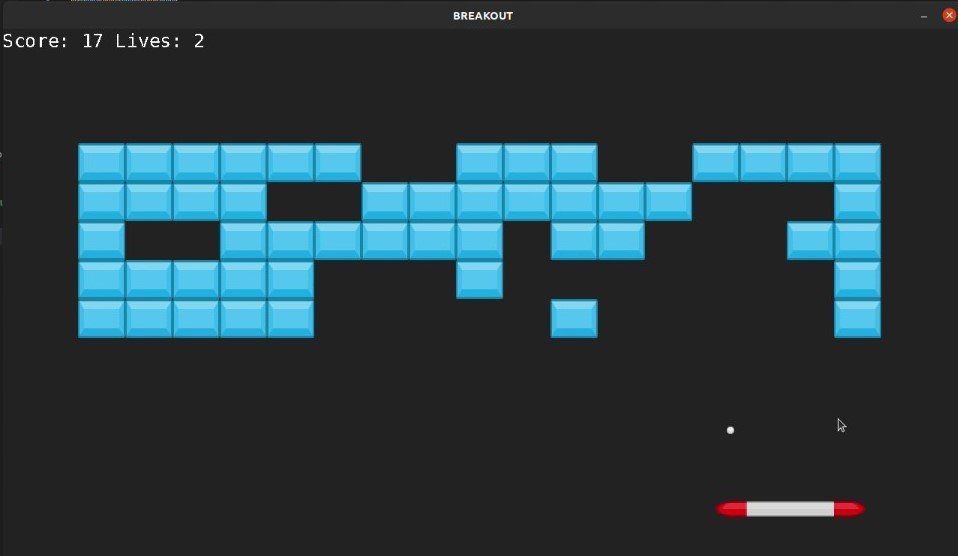

Developed in February 2021 for Northeastern's Building Game Engines class, this re-endition of the classic Breakout game is an exercise in basic game structure using the SDL library for C++.
While making a game from scratch for the first time is a learning experience in itself, I would like to think that given more time, I could expand this game even more.
In terms of the design of the code - specifically from an OO-perspective - I feel like my code didn't utilize delegation nearly enough, and instead had a lot of code crowded into the main game loop function. I had laid out a plan to use a Level Manager class, which would allow me to delegate more tasks out appropriately, and I would have liked to fully implement that class. I think the Sprite class could also be built a little better, and probably should have had a "tag" attribute rather than a boolean flag for if it was a paddle.
First things first, I didn't have time to impelement multiple languages with language config files. That would absolutely be the first addition to this game.With a little more tinkering, and perhaps a separate Block class, the next steps for improving the gameplay itself would be to add in different colored/scored blocks. With a child class of the Sprite class, Blocks could very easily have additional color/image id and score attributes. Each row would simply contain a different color/score block, which pattern could repeat with larger boards. Another feature that would be interesting to add is blocks that spawn extra balls for the player to use. Again, this behavior could be implemented in the block class and handled during collisions.

Breakout Level 2
Breakout Level 3

Breakout Lose